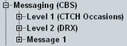

Messaging (CBS) Parameters
This section describes the cell broadcast service (CBS) settings.
CBS is a part of wireless emergency alerts (WEA) solution, formerly known as the commercial mobile alert system (CMAS). This feature is implemented with focus on battery lifetime measurements. It allows you to monitor the power consumption of the phone in idle mode with and without cell broadcast impact on the mobile device.
Option R&S CMW-KS170 is required.
This section is not relevant for reduced signaling.

CBS parameters
Contents